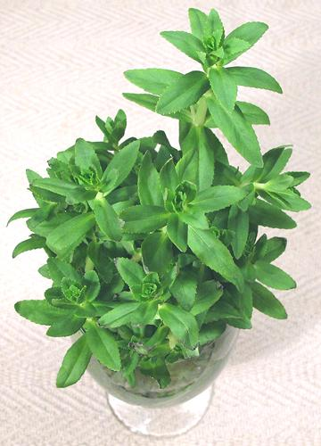

Ngo Om / Rice Paddy Herb

[Ngo Om, Ba Om, Rau Om (Viet); Phak Kayang (Thailand); Tian Xiang Cao,
Zi Su Cao (China); Soyop-pul (Korea); Shiso-kusa (Japan);
Limnophila aromatica]
This aquatic herb is native throughout Southeast Asia, extending into
southern China, Japan and Australia. After the Vietnam war, it was
brought to North America by refugees, and is now easily available in
the Asian markets here in Southern California. This plant grows well
in still water, such as found in rice paddies. It's particularly popular
in Vietnam, but is also used in China and Japan. In Chinese, Japanese
and Korean, the name of this herb is the same as for
Perilla, a very distantly related herb. It
is made specific with a suffix meaning green leafy plant (see names
above).
The flavor is unique, but has been described as a mix of citrus and
cumin. It is also used as a medicinal plant throughout its range, and
is often grown as an aquarium plant.
More on Plantains.
More on Herbs.
Most popular in Vietnam, this herb is most used in fish soups,
especially the famous Sweet Sour Catfish Soup, but also with chicken.
It is often present in the raw herb and vegetable platter usually
placed in the center of a Vietnamese table, and can be used in salads.
In Cambodia this herb is often dried for use out of season.
Buying:
A recent purchase at a large Asian market in
Los Angeles (San Gabriel) was a 4.8 ounce tray for 2016 US $1.80, or
$5.99 / pound.
Storing:
This is a rather perishable herb. Wrapped
loosely in plastic it will keep a few days in the refrigerator.
Altenativiely, stick it in some water as described under "Growing".
Growing:
This plant can be easily grown without your
needing a rice paddy. Take left over fronds and put them in a deep
cup or jar of water. Tent it over with a transparent plastic bag and
leave it for a few days to develop roots. You will probably see some
roots already at joints. When there are sufficient roots, plant it in
a regular pot with a mix of sand and potting soil. Again, keep it
tented with clear plastic, with a few small holes in it to allow some
air circulation. Keep it in part shade until it is well established.
It should need minimal watering. Cut off flower heads when they appear,
as it dies after flowering.
Substitute:
For soups and the like, the best
substitute is a little freshly ground cumin and a bit of lime
or lemon zest.
lm_ngoomz 160614 - www.clovegarden.com
©Andrew Grygus - agryg@clovegaden.com - Photos on this
page not otherwise credited are © cg1 -
Linking to and non-commercial use of this page permitted